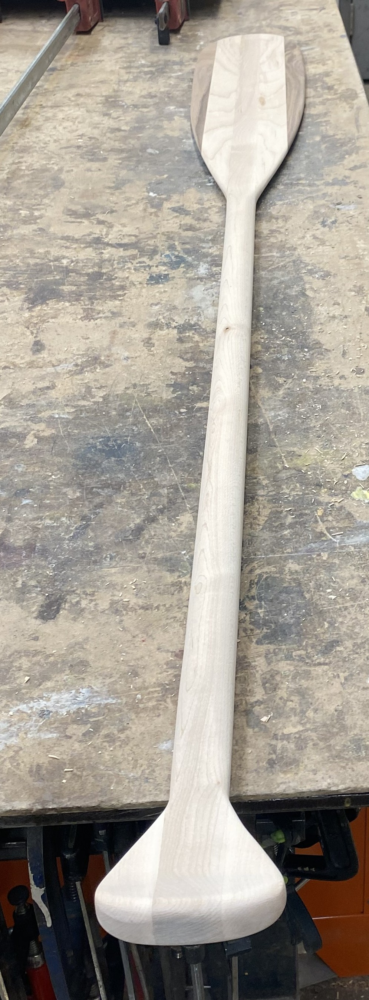
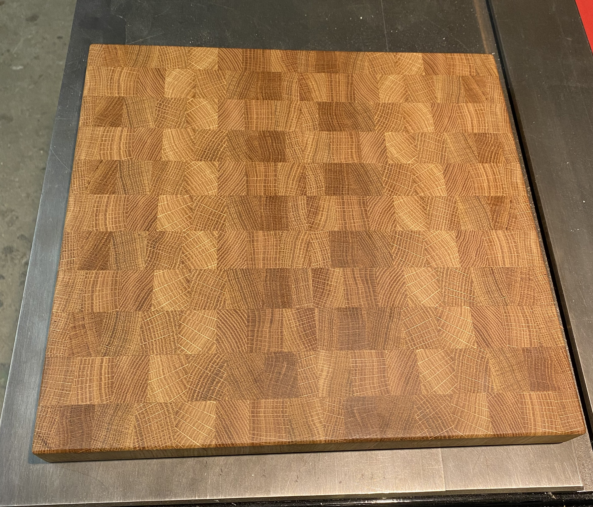
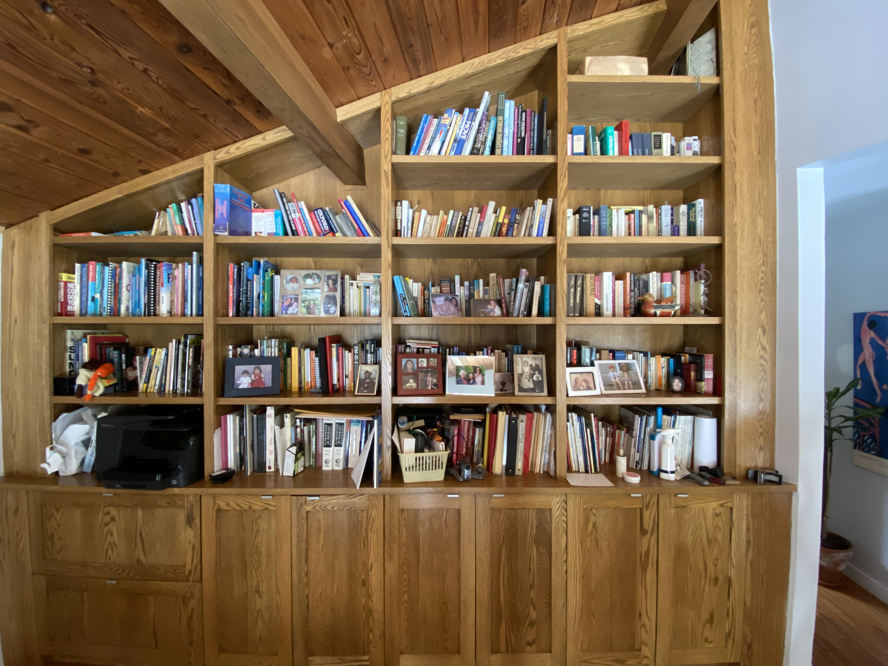

Woodworking
Here is a selection of some of my woodworking projects. Enjoy!
Here is a selection of some of my woodworking projects. Enjoy!

The above project is a beavertail paddle laminated with a combination of hard maple and walnut.

Using white oak scraps from a set of stairs, an endgrain cutting borad was made. Wood fibers run parrallel to the knife blade so, the sharp edge will not dull as quickly.

The above project is a custom bookcase built with red oak.